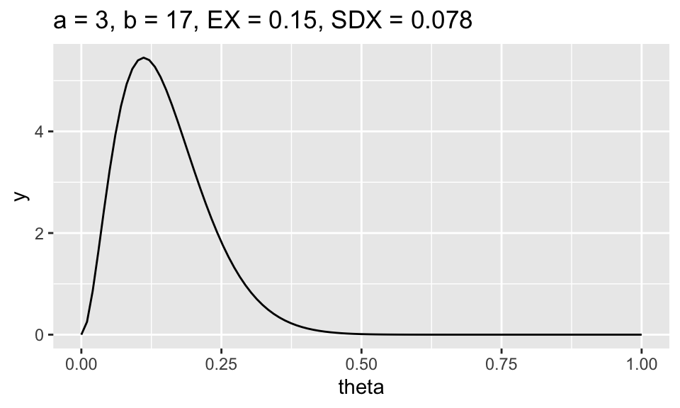
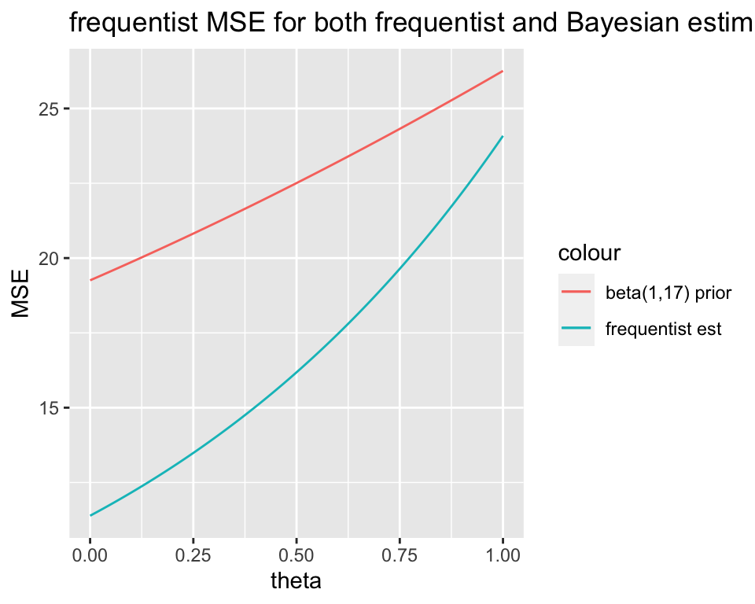

Math 152 - Statistical Theory - Homework 3
Important Note:
You should work to turn in assignments that are clear, communicative, and concise. Part of what you need to do is not print pages and pages of output. Additionally, you should remove these exact sentences and the information about HW scoring below.
Click on the Knit to PDF icon at the top of R Studio to run the R code and create a PDF document simultaneously. [PDF will only work if either (1) you are using R on the network, or (2) you have LaTeX installed on your computer. Lightweight LaTeX installation here: https://yihui.name/tinytex/]
Either use the college’s RStudio server (https://rstudio.pomona.edu/) or install R and R Studio on to your personal computer. See: https://research.pomona.edu/johardin/math152f20/ for resources.
Assignment
Goals:
In this assignment, the fun will include:
- practice using and creating prior distributions.
- practice using and creating posterior distributions.
- using R to visualize how different parameter values change the prior and posterior distributions.
Book problems
- Feel free to do the book problems with a pencil or in LaTeX (RMarkdown supports writing mathematics using LaTeX).
- If you use a pencil, you can take a picture of the problem(s), and include the image(s) using (remove the tick marks to make it work):
Note that myimage.jpeg needs to live in the same folder as the relevant .Rmd file (maybe you called the folder “math 152 hw” and put it on your desktop?)
Saving as jpg, jpeg, png, or pdf should work, but make sure to specify the exact name of the file.
If you have the 3rd edition of the book, the problems will be the same unless they don’t exist – that is, the 4th edition added problems but didn’t change the order of them. Ask me if you want to see the 4th edition problems.
1: Community Q
Describe one thing you learned (not during class) from a member of the class (student, mentor, professor) – it could be: content, logistical help, background material, R information, etc. 1-3 sentences.
2: 7.3.21
Suppose that \(X_1, \ldots , X_n\) form a random sample from the exponential distribution with parameter \(\theta\). Let the prior distribution of \(\theta\) be improper with “p.d.f.” 1/\(\theta\) for \(\theta > 0\). Find the posterior distribution of \(\theta\) and show that the posterior mean of \(\theta\) is \(1/\overline{X}\). (pay attention to whether you have \(\theta\) or \(1/\theta\) from the distribution sheet.)
3: 7.4.3
Consider again the conditions of Exercise 7.4.2. Suppose that the prior distribution of \(\theta\) is as given in Exercise 7.4.2, and suppose again that 20 items are selected at random from the shipment.
- For what number of defective items in the sample will the Bayesian mean squared error of the Bayes estimate be a maximum? (The Bayesian MSE is the variance of the posterior.)
- For what number will the Bayesian mean squared error of the Bayes estimate be a minimum? (The Bayesian MSE is the variance of the posterior.)
4: 7.4.6
Suppose that a random sample of size \(n\) is taken from a Poisson distribution for which the value of the mean \(\theta\) is unknown, and the prior distribution of \(\theta\) is a gamma distribution for which the mean is \(\mu_0\). Show that the mean of the posterior distribution of \(\theta\) will be a weighted average having the form \(\gamma \overline{X} + (1 - \gamma) \mu_0\), and show that \(\gamma \rightarrow 1\) as \(n \rightarrow \infty\).
5: 7.4.10
Suppose that the time in minutes required to serve a customer at a certain facility has an exponential distribution for which the value of the parameter \(\theta\) is unknown, the prior distribution of \(\theta\) is a gamma distribution for which the mean is 0.2 and the standard deviation is 1, and the average time required to serve a random sample of 20 customers is observed to be 3.8 minutes. What is the Bayes estimate of \(\theta\)? (See Exercise 12 of Sec. 7.3. and pay attention to whether you have \(\beta\) or \(1/\beta\) from the distribution sheet.)
6: 7.4.12
Let \(\theta\) denote the proportion of registered voters in a large city who are in favor of a certain proposition. Suppose that the value of \(\theta\) is unknown, and two statisticians A and B assign to \(\theta\) the following different prior p.d.f.s \(\xi_A(\theta)\) and \(\xi_B(\theta)\), respectively: \[\begin{eqnarray*} \xi_A(\theta) &=& 2\theta \mbox{ for } 0 < \theta <1,\\ \xi_B(\theta) &=& 4\theta^3 \mbox{ for } 0 < \theta <1. \end{eqnarray*}\]
In a random sample of 1000 registered voters from the city, it is found that 710 are in favor of the proposition.
- Find the posterior distribution that each statistician assigns to \(\theta\).
- Find the Bayes estimate for each statistician.
- Show that after the opinions of the 1000 registered voters in the random sample had been obtained, the Bayes estimates for the two statisticians could not possibly differ by more than 0.002, regardless of the number in the sample who were in favor of the proposition.
7: R Baseball & Bayes
Consider the baseball problem we discussed in class. (See website for a copy of the handout.)
Let \(\alpha_0\) and \(\beta_0\) be your prior parameters.
- What are your choices of \(\alpha_0\) and \(\beta_0\)? [Use \(\alpha_0\) and \(\beta_0\) values that were not discussed in class and that your friend didn’t use.] What features of the plot of the prior density function made you think that your prior hyper-parameters were good choices? I wrote a function below that you can use to try out different options for the prior.
library(tidyverse)
library(glue)
ex <- function(a,b) {round(a / (a+b), 2)} # what does this function do?
sdx <- function(a,b) {round(sqrt(a*b/((a+b)^2 * (a+b+1))),3)} # what does this function do?
# the function below creates a text string to act as a title
# you don't need to be familiar with the R syntax of glue
beta_legend <- function(a,b) {
glue::glue('a = {a}, ',
'b = {b}, ',
'EX = {ex(a,b)}, ',
'SDX = {sdx(a,b)}')}
# see it in action:
ggplot(data = data.frame(x = c(0, 1)), mapping = aes(x = x)) +
stat_function(fun = dbeta, args = c(3,17), n = 100) +
ggtitle(beta_legend(3,17)) + ylab("y") + xlab("theta")
# change a and b to something we did not do in classUsing properties of expectation [that is, consider both estimates as functions of X, not of \(\theta\) as a frequentist would], find the bias and variance of \(\hat{\theta}_f\) and \(\hat{\theta}_b\). You are a frequentist here, and your answers should both be functions of \(\theta\).
Based on your comparison of the MSE, do you recommend using \(\hat{\theta}_f\) or \(\hat{\theta}_b\)? Explain.
Hint1: first determine whether one estimator has a smaller frequentist MSE. Over what region? Remember from class that Ty Cobb has the best batting average ever, and his average was 0.366.
Hint2: say you think the frequentist mean squared error associated with \(\hat{\theta}_f\) is \(\theta^2 + 6\theta + 4\pi /n + \alpha + \beta\), and you think that the frequentist mean squared error associated with \(\hat{\theta}_b\) is \(\exp(\theta + 2) +4\). The MSE functions I wrote are totally wrong, but if I thought they were correct, I could plot them using the code below.
Hint3: Note that in my totally made up graph just below, it seems like the frequentist estimator always has a smaller frequentist MSE.
# frequentist MSE for Bayesian estimator
mse_b <- function(t,a,b,n) {
t^2 + 6*t + 4*pi/n + a + b # the wrong function, correct it
}
# frequentist MSE for frequentist estimator
mse_f <- function(t, n){
exp(t + 2) + 4# the wrong function, correct it
}# theta is the true batting average by which we can (theoretically!)
# assess the estimator we found (i.e., the estimator defined by the prior)
t <- data.frame(theta = seq(0, 1, by = 0.01))
ggplot(t) +
geom_line(aes(x = theta, y = mse_f(theta, 10), color = "frequentist est")) +
geom_line(aes(x = theta, y = mse_b(theta, 1, 17, 10), color = "beta(1,17) prior")) +
# add more lines here just like the one above, but using different priors.
ylab("MSE") +
ggtitle("frequentist MSE for both frequentist and Bayesian estimators")
If John Spurrier gets three hits in ten at bats, what is your estimate of \(\theta\)? (Given your answer to c.)
Show that in the beta-binomial family, \(\hat{\theta}_b\) is a weighted average of \(\hat{\theta}_f\) and the prior mean.